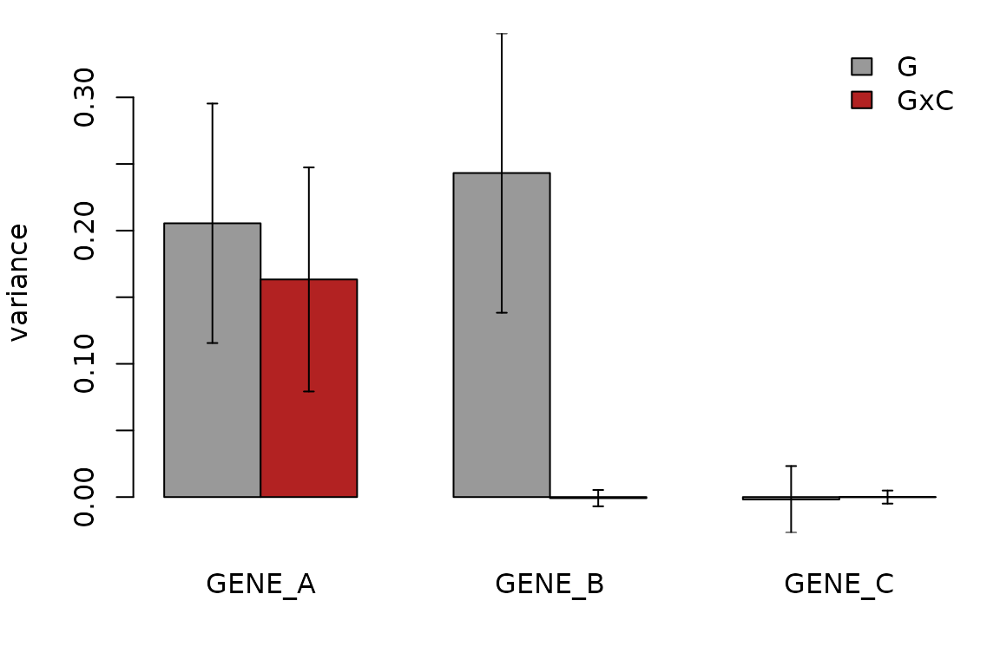

Tutorial: G×Cell-State heritability
Source:vignettes/articles/tutorial-cell-state.Rmd
tutorial-cell-state.RmdThis tutorial fits the cell-level model to the simulated example.
ex$cell holds 12,000 cells of one cell type from 400
donors; a continuous cell state, cell covariates
(pc1, pc2), donor covariates
(age, sex, batch) and three genes
with known architecture (ex$truth):
ex$truth
#> gene g gxc i cov noise
#> 1 GENE_A 0.20 0.15 0.10 0.05 0.5
#> 2 GENE_B 0.25 0.00 0.10 0.05 0.6
#> 3 GENE_C 0.00 0.00 0.15 0.05 0.8-
GENE_A: main genetic + G×Cell-State + donor effect -
GENE_B: main genetic + donor effect, no interaction -
GENE_C: no genetic effect
1. Fit the model
covs <- c("pc1", "pc2", "age", "sex", "batch")
fitA <- schint_cell(ex$cell, "GENE_A", "donor", geno = ex$geno,
context = "state", covariates = covs, jackknife = TRUE)
fitA
#> scHINT model: 12000 observations, 400 donors, 1 GRM
#>
#> Variance components (variance on the standardized-expression scale):
#> term variance h2 se se_h2
#> G 0.20500 0.4140 0.0449 0.08650
#> GxC 0.16300 0.3290 0.0420 0.05680
#> G_total 0.36900 0.7430 0.0624 0.06580
#> I 0.07670 0.1550 0.0348 0.07130
#> context 0.00704 0.0142 0.0042 0.00793
#> covariate 0.04360 0.0879 0.0131 0.02840
#> total_explained 0.49600 NA 0.0605 NA
#>
#> Standard errors: jackknife over 400 donor blocksG is the genetic variance present in every cell,
GxC the genetic variance that varies with
state, and G_total their sum. h2
is the population-level heritability (cell-level residual removed from
the denominator; see Model, section 7).
2. Is there G×Cell-State heritability?
Compare the interaction estimate and its jackknife standard error across genes:
res <- do.call(rbind, lapply(c("GENE_A", "GENE_B", "GENE_C"), function(g) {
f <- schint_cell(ex$cell, g, "donor", geno = ex$geno, context = "state",
covariates = covs, jackknife = TRUE)
s <- f$summary
cbind(gene = g, s[s$term %in% c("G", "GxC"), c("term", "variance", "se")])
}))
res$z <- res$variance / res$se
res
#> gene term variance se z
#> 1 GENE_A G 2.054834e-01 0.044935305 4.5728725294
#> 2 GENE_A GxC 1.633264e-01 0.042040189 3.8850057331
#> 3 GENE_B G 2.432125e-01 0.052432249 4.6386052352
#> 4 GENE_B GxC -7.989363e-04 0.003062612 -0.2608676159
#> 5 GENE_C G -1.763903e-03 0.012526265 -0.1408163986
#> 6 GENE_C GxC 6.656247e-07 0.002449649 0.0002717224GxC is clearly non-zero for GENE_A
only.

3. Several context axes
context accepts several columns, each with its own main
and G× term. Here the categorical subtype is added as a
second context (one pooled “same subtype” component):
f2 <- schint_cell(ex$cell, "GENE_A", "donor", geno = ex$geno,
context = c("state", "subtype"), covariates = covs)
f2$summary
#> term variance h2
#> 1 G 0.21440353 0.41957982
#> 2 GxC 0.14995344 0.29345337
#> 3 G_total 0.36435697 0.71303318
#> 4 GxC:state 0.16794075 0.32865386
#> 5 GxC:subtype -0.01798730 -0.03520049
#> 6 I 0.07673174 0.15016120
#> 7 context 0.02630677 0.05148138
#> 8 covariate 0.04360033 0.08532424
#> 9 total_explained 0.51099582 NAThe per-variable terms GxC:state and
GxC:subtype split the interaction. With
cat_mode = "per_level" a categorical context gets a
separate genetic variance per level.
4. Main-effect-only covariates versus context
A variable in context gets a main effect and a
G× interaction. A variable in covariates gets a main effect
only. To mirror a typical analysis, put the leading state PCs (say 5) in
context and further PCs and technical variables in
covariates.
5. Multiple GRMs
grms <- lapply(split_snps(ex$geno, 3, by = "maf"), make_grm) # a list of GRMs
f3 <- schint_cell(ex$cell, "GENE_A", "donor", grm = grms,
context = "state", covariates = covs)
f3$summary[, c("term", "variance", "h2")]
#> term variance h2
#> 1 G 0.204228343 0.41130861
#> 2 1 0.049905548 0.10050800
#> 3 2 0.057175714 0.11514985
#> 4 3 0.097147081 0.19565076
#> 5 GxC 0.163952322 0.33019414
#> 6 1:C 0.071357990 0.14371245
#> 7 2:C 0.044389316 0.08939850
#> 8 3:C 0.048205016 0.09708319
#> 9 G_total 0.368180665 0.74150275
#> 10 I 0.077732238 0.15654996
#> 11 context 0.007035167 0.01416858
#> 12 covariate 0.043585040 0.08777872
#> 13 total_explained 0.496533110 NAHere the cis SNPs are split into three MAF bins (rarest first), each
with its own main and G×Cell-State variance; G and
GxC are the sums over GRMs. Pass a list of genotype
matrices, or of GRMs, to split by any annotation.
6. Pre-computed GRMs
K <- make_grm(ex$geno)
all.equal(coef(schint_cell(ex$cell, "GENE_A", "donor", grm = K, context = "state",
covariates = covs)),
coef(fitA))
#> [1] TRUE7. Jackknife options
n_blocks groups donors into blocks (faster for very
large cohorts); seed controls the assignment. The per-block
estimates are in fit$jackknife$estimates, from which the
standard error of any function of the components can be computed.
jk <- schint_cell(ex$cell, "GENE_A", "donor", geno = ex$geno, context = "state",
covariates = covs, jackknife = TRUE, n_blocks = 20)
B <- jk$jackknife$estimates
ratio <- B[, "G:state"] / B[, "G"] # a custom statistic
sqrt((length(ratio) - 1) / length(ratio) * sum((ratio - mean(ratio))^2))
#> [1] 0.2639944